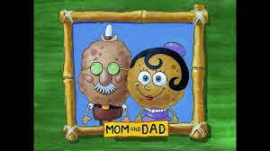

En "SB-129," se ve un descendiente robótico de Bob Esponja llamado Esponja Tron, así como un ancestro primitivo.

Familia:
Bob Esponja tiene muchos parientes, sobre todo sus padres, que aparecen en varios episodios. A diferencia de Bob Esponja, que es rectangular, la mayoría de los parientes de Bob Esponja se asemejan más a las esponjas marinas reales, siendo de forma redonda y de color marrón.
En "SB-129," se ve un descendiente robótico de Bob Esponja llamado Esponja Tron, así como un ancestro primitivo.
"Ugh" presenta una versión cavernícola de Bob Esponja conocida como Esponja Gar.

"Peste del Oeste" presenta a Buck Esponja Pantalones Cuadrados; un antepasado que salvó a Dead Eye Barranco en lo que ahora es Fondo de Bikini de Ojo Muerto Plankton en 1882.